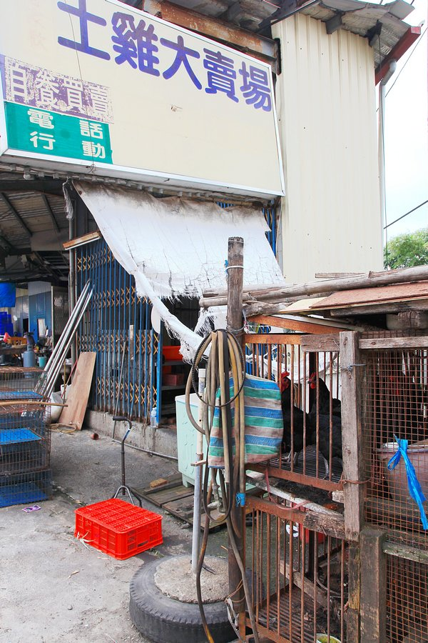

引子：
臺灣的山林郷野鎮上常有許多小販售賣著農林野產，某日行經一地，偶然停駐在雞籠前，籠子裏待宰的一隻土雞從籠中探出頭來和我對望，忽然之間，我想起前一陣子網路上所流傳一篇有關流浪狗安樂死前的影像，心裏也雜亂地浮出一些沒有條理的句子「你不殺流浪狗，土雞卻因你而死。」、「流浪狗不可殺，而土雞可死矣。」、「死有輕如鴻毛，有重如泰山」，同時亦有種幽微的感覺，覺得此時此刻意識中的凌亂思緒，可能和筆者近來集中創作的主題有些關聯，於是冒著被趨趕的可能性，匆匆拿起相機，按下快門。

回家後上網搜尋了一下，找出由誠品駐站作家「杜韻飛」所拍攝的這篇「生殤相：流浪犬安樂死日最終肖像」，先前第一次看到這些流浪狗的影像時就留下深刻的印象，照片中流浪狗無奈與無辜的表情，和牠們即將面臨的處境形成極為鮮明的呼應，令觀者不免為之動容，甚且會進一步興起對流浪動物的種種憐憫，而就在同一片天空下，有另外一批生物亦面臨著和這些流浪狗類似的情境，也或許是更糟糕的情境，以這些土雞為例，我想牠們在稍後並不會有安樂死的待遇，通常是脖子一抹，然後慢慢等待死去，在此筆者並非要挑戰流浪狗是否該不該捕捉或安樂死的議題，只是在和土雞對望的當下，那一幀幀流浪狗安樂死前的最終肖像卻也浮上心頭的一種奇特對比感，人類的世界充滿了許多同時並立，看似矛盾，卻又一直繼續存在的概念，流浪狗之死或有動物保育團體為其發聲，而土雞之死又能否得到一些素食群體或宗教團體的聲援呢？生命的價值是否有輕重之分？對生命的愛惜和保護又是否因為人類自身不同的立場而可以有所分別？若生命可以分層次，那有朝一日當人類面臨更高階的生命體時又該如何自處？一瞬間的對望所引發的這些思緒，在稍微沈澱過後釐出這些可以是二元對立也可以是同形共存的種種概念，而此即為筆者近日來集中創作的主軸，故以此為引子提楔。
==============================================================
正文：
這張照片應該可以算是這一系列主題創作的起點吧。拍攝這張照片時，兩者之間的關係已如同畫面所呈現，幾乎要完全各自分離的狀態了，半年多來的轉變，將原本應同在一個屋簷下的兩者慢慢分隔成兩道不同的窗，而僅有的一點點連繫就像前景中的枯枝般，細微而脆弱，何時會完成斷裂而應聲分離呢？主動權並不在拍攝者身上。

鏡中的世界和真實的世界是種對立但同形的結構，即使左右顛倒，對於即將分道揚鑣的雙曲路口並沒有太大的影響。

一面是淳實樸厚的農田景觀，一面是鋼筋水泥的現代住宅，在這個路口有人要向左轉，有人要向右轉，這看似對立的場景，其實不過是包含在方圓不超過一百公尺範圍裏的同一座都市景觀。

臺北車站地底下通道愈來愈四通八達，每日在此穿梭行進的人來人往都忙著往各自的方向而去，負責車站維護管理的工作人員在某面牆上精心製作了照片佈置，想來也少有人能用心駐足停下來觀賞吧，照片是承載時空瞬流的結晶，其所呈現者為過往一段時空的切片，故亦可理解為某段現實時空的同形結構物，在這面照片展示牆的前方恰好有支光面磨石子的建築支撐大柱，讓正在展覽的照片又映射出另一道鏡面影像，路過的旅人行色匆匆，其當下的身影和凝結過往時空的照片一起投射在磨石子鏡面上，讓新舊時空的對比影像，一起融合在另一個同形結構中。


回首頁 Back to Home 回主題式拍攝作品